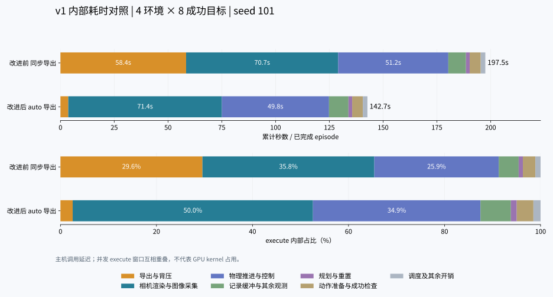

本次 4 环境配对测试中，平均 execute 累计时间由 197.53 秒变为 142.71 秒；其中等待窗口内的导出与背压由 58.41 秒变为 3.64 秒。改进后相机渲染与图像采集占 execute 内部的 50.0%，物理推进与控制占 34.9%。
改进前为冻结 v1 的同步导出；改进后为同一 v1 的自动扩展多进程异步导出，并包含该路径既有的 CPU 记录缓冲所有权优化。两组使用相同计时钩子、输入 SHA256、任务 YAML、seed=101、4 个环境、8 个成功目标和 60 个最终保持步，按改进前→改进后依次运行。
这是固定 seed 的一次配对实验。测量的是主机调用的墙钟延迟，没有新增 CUDA 同步；GPU 工作可能在后续读取时才产生阻塞，因此各行不能解释为隔离的 GPU kernel 用时。
| 指标 | 改进前：同步导出 | 改进后：auto 导出 |
|---|---|---|
| 成功数 | 8 | 8 |
| 失败数 | 0 | 0 |
| 最终文件就绪秒数（首 episode 起） | 515.768 | 350.297 |
| 最终文件吞吐（成功数/分钟） | 0.931 | 1.370 |
| 平均 episode 秒数 | 234.423 | 154.697 |
| 平均 execute 累计秒数 | 197.526 | 142.706 |
| 平均执行步数 | 1370.375 | 1370.375 |
| 平均 queue.join 秒数（嵌套） | 195.420 | 140.682 |
| 生产主进程峰值 RSS GiB（采样） | 33.48 | 25.22 |
动作序列精确匹配 8 组（按完整 actions 数组 SHA256 匹配，不依赖导出编号）。三路 RGB 均为 640×480 uint8、gzip level 2；像素内容未作逐帧比较。
最终文件吞吐比值：1.472 倍；变化 +47.2%。 物理与文件结构验证：两组均通过。
平均 execute 减少 54.82 秒，其中导出与背压归因减少 54.77 秒。相机与物理控制的绝对耗时变化较小，加速主要来自同步导出对其他环境阻塞的减少；相机占比升高主要是总时间缩短所致。
每次 execute 从入口到返回期间，对主线程实际执行的同步环节做互斥计时；包括其他环境在该等待窗口内的规划、重置和导出。这里回答的是“等待时主程序在做什么”。4 个环境的窗口会重叠，表中各行可在单个窗口内相加，但不能跨环境相加得到整批墙钟。
| 汇总环节 | 改进前秒/episode | 内部占比 | 改进后秒/episode | 内部占比 |
|---|---|---|---|---|
| 导出与背压 | 58.412 | 29.57% | 3.638 | 2.55% |
| 相机渲染与图像采集 | 70.720 | 35.80% | 71.412 | 50.04% |
| 物理推进与控制 | 51.196 | 25.92% | 49.803 | 34.90% |
| 记录缓冲与其余观测 | 8.194 | 4.15% | 9.041 | 6.34% |
| 规划与重置 | 1.733 | 0.88% | 1.732 | 1.21% |
| 动作准备与成功检查 | 5.133 | 2.60% | 4.956 | 3.47% |
| 调度及其余开销 | 2.138 | 1.08% | 2.124 | 1.49% |
| 环节 | 改进前秒/episode | 内部占比 | 改进后秒/episode | 内部占比 |
|---|---|---|---|---|
| 物理推进（主机调用） | 37.883 | 19.18% | 36.656 | 25.69% |
| 相机位姿更新 | 35.757 | 18.10% | 36.136 | 25.32% |
| 同步导出／异步提交其余开销 | 58.412 | 29.57% | 0.019 | 0.01% |
| 相机实际渲染（主机调用） | 29.090 | 14.73% | 28.972 | 20.30% |
| 控制器施加动作 | 6.672 | 3.38% | 6.634 | 4.65% |
| 其余观测计算 | 6.150 | 3.11% | 6.444 | 4.52% |
| 场景数据写入仿真 | 4.588 | 2.32% | 4.594 | 3.22% |
| RGB GPU→CPU 复制（含等待） | 3.802 | 1.92% | 4.158 | 2.91% |
| 目标位姿转动作 | 2.908 | 1.47% | 2.793 | 1.96% |
| 成功条件检查 | 2.225 | 1.13% | 2.163 | 1.52% |
| 相机数据更新其余开销 | 1.785 | 0.90% | 1.835 | 1.29% |
| 记录缓冲复制与追加 | 1.483 | 0.75% | 2.103 | 1.47% |
| 运动规划 | 1.718 | 0.87% | 1.717 | 1.20% |
| 导出共享内存打包 | 0.000 | 0.00% | 3.207 | 2.25% |
| 场景状态更新 | 1.224 | 0.62% | 1.120 | 0.78% |
| 协程调度及未细分的生成逻辑 | 1.071 | 0.54% | 1.087 | 0.76% |
| env.step 其余开销 | 0.856 | 0.43% | 0.817 | 0.57% |
| 环境动作处理 | 0.830 | 0.42% | 0.799 | 0.56% |
| 逐帧记录后处理 | 0.531 | 0.27% | 0.465 | 0.33% |
| RGB 读取包装其余开销 | 0.217 | 0.11% | 0.234 | 0.16% |
| 主循环未细分开销 | 0.212 | 0.11% | 0.220 | 0.15% |
| 导出轮询／背压 | 0.000 | 0.00% | 0.412 | 0.29% |
| sim.render 调度与回调 | 0.039 | 0.02% | 0.043 | 0.03% |
| 逐帧记录前处理 | 0.029 | 0.01% | 0.029 | 0.02% |
| 渲染场景变换同步 | 0.016 | 0.01% | 0.017 | 0.01% |
| 环境重置其余开销 | 0.014 | 0.01% | 0.015 | 0.01% |
| 渲染器输出读取 | 0.013 | 0.01% | 0.015 | 0.01% |
| 合计 | 197.526 | 100% | 142.706 | 100% |
queue.join 等待分别占 execute 的 98.93% 和 98.58%。这是包含仿真等工作的逻辑等待，已被上表归因覆盖，不能再加到上表。
从主仿真循环进入到退出，不重复计算并发 episode，子环节从父环节扣除。包括最终目标达成时仍在进行的 episode；不包含启动和循环退出后的异步排空。
| 环节 | 改进前总秒数 | 占循环墙钟 | 改进后总秒数 | 占循环墙钟 |
|---|---|---|---|---|
| 同步导出／异步提交其余开销 | 210.460 | 40.87% | 0.059 | 0.02% |
| 物理推进（主机调用） | 76.658 | 14.89% | 74.651 | 23.41% |
| 相机位姿更新 | 72.475 | 14.08% | 73.848 | 23.15% |
| 相机实际渲染（主机调用） | 58.908 | 11.44% | 58.890 | 18.46% |
| 运动规划 | 15.394 | 2.99% | 15.870 | 4.98% |
| 控制器施加动作 | 13.497 | 2.62% | 13.551 | 4.25% |
| 其余观测计算 | 12.446 | 2.42% | 13.161 | 4.13% |
| 场景数据写入仿真 | 9.286 | 1.80% | 9.372 | 2.94% |
| 目标位姿转动作 | 9.352 | 1.82% | 9.016 | 2.83% |
| RGB GPU→CPU 复制（含等待） | 7.697 | 1.49% | 8.444 | 2.65% |
| 协程调度及未细分的生成逻辑 | 7.080 | 1.37% | 7.052 | 2.21% |
| 成功条件检查 | 6.833 | 1.33% | 6.683 | 2.10% |
| 导出共享内存打包 | 0.000 | 0.00% | 11.579 | 3.63% |
| 相机数据更新其余开销 | 3.624 | 0.70% | 3.745 | 1.17% |
| 记录缓冲复制与追加 | 3.004 | 0.58% | 4.321 | 1.35% |
| 场景状态更新 | 2.473 | 0.48% | 2.298 | 0.72% |
| env.step 其余开销 | 1.730 | 0.34% | 1.672 | 0.52% |
| 环境动作处理 | 1.680 | 0.33% | 1.630 | 0.51% |
| 逐帧记录后处理 | 1.076 | 0.21% | 0.952 | 0.30% |
| RGB 读取包装其余开销 | 0.441 | 0.09% | 0.477 | 0.15% |
| 主循环未细分开销 | 0.429 | 0.08% | 0.447 | 0.14% |
| 导出轮询／背压 | 0.000 | 0.00% | 0.829 | 0.26% |
| 环境重置其余开销 | 0.176 | 0.03% | 0.186 | 0.06% |
| sim.render 调度与回调 | 0.080 | 0.02% | 0.088 | 0.03% |
| 逐帧记录前处理 | 0.060 | 0.01% | 0.059 | 0.02% |
| 渲染场景变换同步 | 0.033 | 0.01% | 0.036 | 0.01% |
| 渲染器输出读取 | 0.027 | 0.01% | 0.030 | 0.01% |
| 合计 | 514.921 | 100% | 318.944 | 100% |
线程 CPU 时间记录主线程实际被 CPU 调度执行的时长。墙钟减去线程 CPU 时间包含 GPU 或其他线程等待、I/O 和调度延迟，不能全部命名为 GPU 等待；其他 CPU 线程和导出进程的计算不在该线程计数中。
| 主循环指标 | 改进前 | 改进后 |
|---|---|---|
| 主线程 CPU 秒数 | 415.791 | 222.932 |
| 主线程 CPU 时间 / 循环墙钟 | 80.75% | 69.90% |
| 调用环节 | 改进前线程 CPU / 该环节墙钟 | 改进后线程 CPU / 该环节墙钟 |
|---|---|---|
| 同步导出／异步提交其余开销 | 99.26% | 90.73% |
| 相机位姿更新 | 98.92% | 99.28% |
| 相机实际渲染（主机调用） | 43.71% | 45.58% |
| RGB GPU→CPU 复制（含等待） | 98.69% | 99.29% |
| 物理推进（主机调用） | 22.72% | 22.87% |
| 记录缓冲复制与追加 | 68.16% | 59.01% |
当前 ManagerBasedRLEnv.step 在启用 recorder 时，先计算一次观测供记录，再在步骤末尾计算一次观测。每次观测读取三路 RGB；rgb_image 每次读取又更新所有三台相机的位姿。因此正常批次步内会计算两次观测、复制六批 RGB、执行六次全相机位姿更新。相机渲染缓存避免每次重复读取都重新渲染，但重复位姿计算和 CPU 拷贝仍有成本。
实际调用数按批次环境步折算（含少量重置调用）：改进前观测计算 2.004 次，RGB 复制 6.012 次，相机渲染 3.012 次；改进后分别为 2.004、6.012、3.012 次。
相机位姿和重复图像读取是后续可检查的优化方向；本实验仅测量，没有修改它们，也没有验证缓存合并后的图像与时序等价性。
rgb_readback_other 仅为上述子环节之外的包装开销；scene_update 仍可能包含传感器相关工作。record_buffer_copy 包含 RecorderManager.add_to_episodes 的递归处理、张量复制与追加。scheduler_other 仍包含没有细分的轨迹准备和协程开销，不等同于纯空闲。